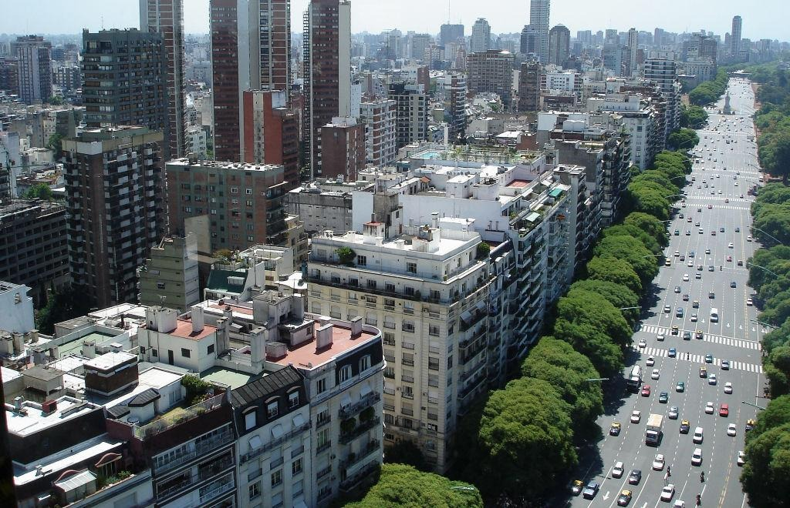

Idée voyage en petit groupe !
Argentine
Ville & Nature en Mouvement
20 jours au cœur de l'Argentine :
- Buenos Aires & le tango argentin
- Les Chutes d'Iguazú
- Le Delta du Tigre
- Une journée dans la Pampa
- Les missions jésuites de Misiones
- Les Saltos del Moconá
vpdvoyages.com